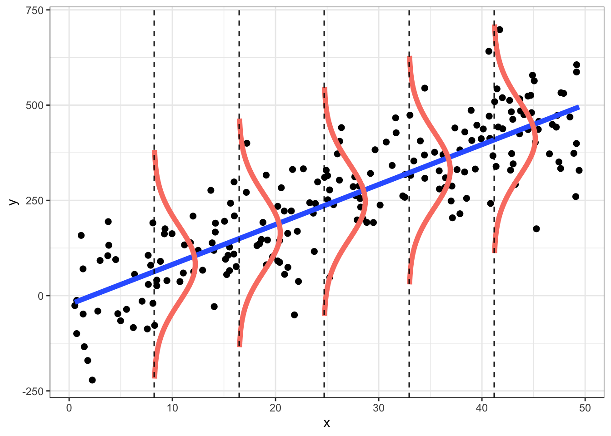

Chapter1 Day 1
1.1 Notation
The dimensions of different mathematical objects are very important for the study of spatial statistics. To communicate this, we use the following notation. A scalar random variable is represented by a lowercase alphanumeric letter (\(x\), \(y\), \(z\), etc.), a vector random variable is respresented by a bold lowercase alphanumeric letter (\(\mathbf{x}\), \(\mathbf{y}\), \(\mathbf{z}\), etc.), and a matrix random variable is respresented by a bold uppercase alphanumeric letter (\(\mathbf{X}\), \(\mathbf{Y}\), \(\mathbf{Z}\), etc.). We use a similar notation for parameters as well where scalar parameters are represented by a lowercase Greek letter (\(\mu\), \(\alpha\), \(\beta\), etc.), a vector parameter is respresented by a bold lowercase Greek letter (\(\boldsymbol{\mu}\), \(\boldsymbol{\alpha}\), \(\boldsymbol{\beta}\), etc.), and a matrix random variable is respresented by a bold uppercase Greek letter (\(\boldsymbol{\Sigma}\), \(\boldsymbol{\Psi}\), \(\boldsymbol{\Gamma}\), etc.).
1.2 Probability Distributions
We also need notation to explain probability distributions. We use the notation \([y]\) to denote the probability density function \(p(y)\) of the random variable \(y\) and \([y|x]\) to denote the probability density function \(p(y|x)\) of \(y\) given \(x\). For example, if \(y\) is a Gaussian random variable with mean \(\mu\) and standard deviation \(\sigma\) we write
\[\begin{align*} [y | \mu, \sigma] & = \frac{1}{\sqrt{2 \pi \sigma^2}} \exp \left\{-\frac{1}{2 \sigma^2} (y - \mu)^2 \right\}. \end{align*}\]
We can also denote that \(y\) has a Gaussian (normal) distribution given mean \(\mu\) and variance \(\sigma^2\) using the \(\sim\) notation
\[\begin{align*} y | \mu, \sigma & \sim \operatorname{N}(\mu, \sigma^2). \end{align*}\]
1.2.1 Example: linear regression
\[\begin{align*} \left[y_i | \boldsymbol{\theta} \right] & \sim \operatorname{N}(X_i \beta, \sigma^2) \\ \boldsymbol{\theta} & = (\beta, \sigma^2) \end{align*}\]
## Sample data
set.seed(404)
dat <- data.frame(x=(x=runif(200, 0, 50)),
y=rnorm(200, 10 * x, 100))
## breaks: where you want to compute densities
breaks <- seq(0, max(dat$x), len=7)[-c(1, 7)]
dat$section <- cut(dat$x, breaks)
## Get the residuals
dat$res <- residuals(lm(y ~ x, data=dat))
## Compute densities for each section, and flip the axes, and add means of sections
## Note: the densities need to be scaled in relation to the section size (2000 here)
ys <- seq(-300, 300, length = 50)
xs <- rep(breaks, each = 50) + 1000 * dnorm(ys, 0, 100)
res <- matrix(0, 50, 5)
for (i in 1:5) {
res[, i] <- 10 * breaks[i] + ys
}
dens <- data.frame(x = xs, y=c(res),
grouping = cut(xs, breaks))
ggplot(dat, aes(x, y)) +
geom_point(size = 2) +
geom_smooth(method="lm", fill=NA, lwd=2, se = FALSE) +
geom_path(data=dens, aes(x, y, group = grouping),
color="salmon", lwd=2) +
theme_bw() +
geom_vline(xintercept=breaks, lty=2)## `geom_smooth()` using formula 'y ~ x'
1.3 Hierarchical modeling
Follow Berliner (1996) framework for hierarchical probability models
Model encodes our understanding of the scientific process of interest
Model accounts for as much uncertainty as possible
Model results in a probability distribution
- Note: nature may be deterministic – often probabilistic models outperform physical models.
- Example: model individual rain drops vs. probability/intensity of rain
Update model with data
Use the model to generate parameter estimates given data
1.3.1 Bayesian Hierarchical models (BHMs)
Break the model into components:
Data Model.
Process Model.
Parameter Model.
Combined, the data model, the process model, and the parameter model define a posterior distribution.
\[\begin{align*} \color{cyan}{[\mathbf{z}, \boldsymbol{\theta}_D, \boldsymbol{\theta}_P | \mathbf{y}]} & \propto \color{red}{[\mathbf{y} | \boldsymbol{\theta}_D, \mathbf{z}]} \color{blue}{[\mathbf{z} | \boldsymbol{\theta}_P]} \color{orange}{[\boldsymbol{\theta}_D] [\boldsymbol{\theta}_P]} \end{align*}\]
1.3.2 Empirical Hierarchical models (EHMs)
Break the model into components:
Data Model.
Process Model.
Parameter estimates (fixed values) are substituted before fitting the model
Combined, the data model and the process model define a predictive distribution. Thus, numerical evaluation of the predictive distribution is typically required to estimate unceratinty (bootstrap, MLE asymptotics)
- Note: the predictive distribution is not a posterior distribution because the normalizing constant is not known
\[\begin{align*} \color{plum}{[\mathbf{z} | \mathbf{y}]} & \propto \color{red}{[\mathbf{y} | \boldsymbol{\theta}_D, \mathbf{z}]} \color{blue}{[\mathbf{z} | \boldsymbol{\theta}_P]} \end{align*}\]
1.3.3 Data Model
\[\begin{align*} \color{red}{[\mathbf{y} | \boldsymbol{\theta}_D, \mathbf{z}]} \end{align*}\]
Describes how the data are collected and observed.
Account for measurement process and uncertainty.
Model the data in the manner in which they were collected.
Data \(\mathbf{y}\).
Noisy.
Expensive.
Not what you want to make inference on.
Latent variables \(\mathbf{z}\).
Think of \(\mathbf{z}\) as the ideal data.
No measurement error - the exact quantity you want to observe but can’t.
Data model parameters \(\boldsymbol{\theta}_D\).
1.3.4 Process Model
\[\begin{align*} \color{blue}{[\mathbf{z} | \boldsymbol{\theta}_P]} \end{align*}\]
Where the science happens!
Latent process \(\mathbf{z}\) is modeled.
Can be dynamic in space and/or time
Process parameters \(\boldsymbol{\theta}_P\).
Virtually all interesting scientific questions can be made with inference about \(\mathbf{z}\)
1.3.5 Parameter (Prior) Model (BMHs only)
\[\begin{align*} \color{orange}{[\boldsymbol{\theta}_D] [\boldsymbol{\theta}_P]} \end{align*}\]
Probability distributions define “reasonable” ranges for parameters.
Parameter models are useful for a variety of problems:
Choosing important variables.
Preventing over-fitting (regularization).
“Pooling” estimates across categories.
1.3.6 Posterior Distribution
\[\begin{align*} \color{cyan}{[\mathbf{z}, \boldsymbol{\theta}_D, \boldsymbol{\theta}_P | \mathbf{y}]} & \propto [\mathbf{y} | \boldsymbol{\theta}_D, \mathbf{z}] [\mathbf{z} | \boldsymbol{\theta}_P] [\boldsymbol{\theta}_D] [\boldsymbol{\theta}_P] \end{align*}\]
Probability distribution over all unknowns in the model.
Inference is made using the posterior distribution.
Because the posterior distribution is a probability distribution (BHMs), uncertainty is easy to calculate. This is not true for EHMs.
1.3.7 Scientifically Motivated Statistical Modeling
Criticize the model
Does the model fit the data well?
Do the predictions make sense?
Are there subsets of the data that don’t fit the model well?
Make inference using the model.
If the model fits the data, use the model fit for prediction or inference.
References
Berliner, L Mark. 1996. “Hierarchical Bayesian Time Series Models.” In Maximum Entropy and Bayesian Methods, 15–22. Springer.